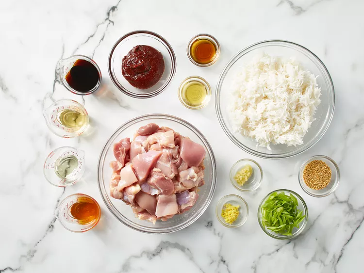
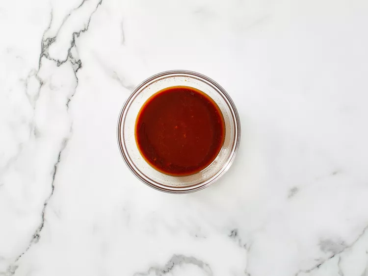
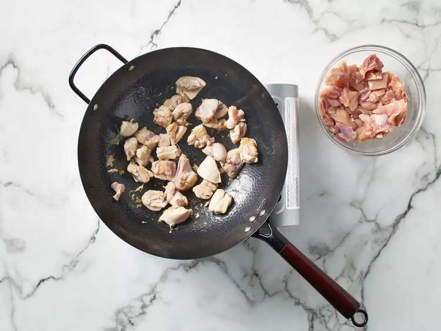
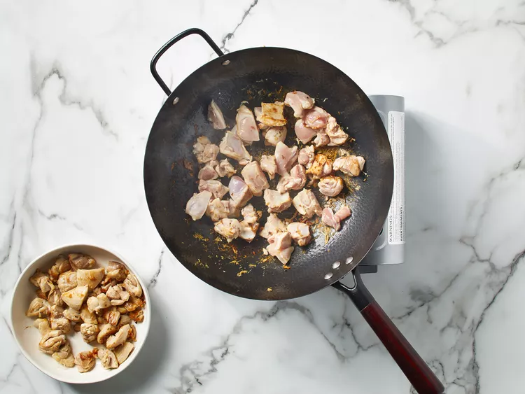
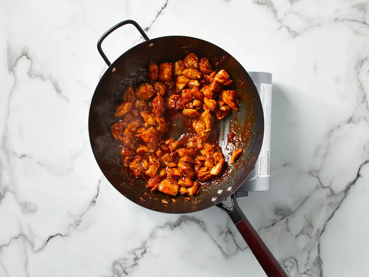
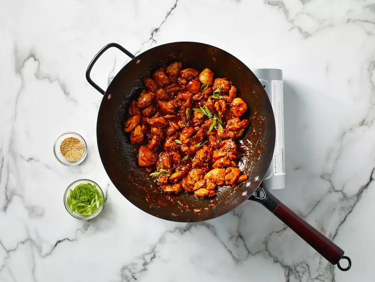

Sweet and Spicy Gochujang Chicken

Description
Sweet and sour gochujang chicken is a quick wok dish featuring Korean
flavors. Serve over rice.
Gochujang Chicken Ingredients
-
Gochujang: This recipe starts with ⅓ cup gochujang
(Korean hot pepper paste).
-
Soy sauce: Less sodium soy sauce lends tons of savory,
umami-rich flavor.
-
Mirin: Sweet rice wine (mirin) gives the dish even more umami-rich, yet mildly sweet, flavor.
-
Honey: Honey puts the “sweet” in the “sweet and spicy.”
-
Garlic: Take the flavor up a notch with three cloves of
garlic.
-
Sesame oil: Add one or two teaspoons of sesame oil,
depending on your flavor preferences.
-
Ginger: For the most delicious results, grate your own
fresh ginger.
- Canola oil: Cook the chicken in canola oil
-
Chicken: Opt for skinless, boneless chicken thighs.
-
Garnishes: Garnish the gochujang chicken with toasted
sesame seeds and green onions.
-
Rice: Serve the gochujang chicken over white rice.
Ingredients
- ⅓ cup gochujang (Korean hot pepper paste)
- 4 tablespoons sodium-reduced soy sauce
- 2 tablespoons sweet rice wine (mirin)
- 2 tablespoons honey
- 3 cloves garlic, grated
- 1 teaspoon sesame oil, or more to taste
- 1 teaspoon freshly grated ginger
- 1 tablespoon canola oil
-
2 pounds skinless, boneless chicken thighs, cut into bite-size pieces
- 1½ teaspoons toasted sesame seeds
- 3 tablespoons thinly bias-sliced green onions
- 6 cups cooked rice
Steps
-
Gather all ingredients.

-
Stir together gochujang, soy sauce, sweet rice wine, honey, garlic,
sesame oil, and ginger in a small bowl.

-
Heat oil over medium-high in a wok or large skillet. Add half of the
chicken to the wok; cook and stir over medium-high until chicken is no
longer pink, about 5 minutes.

-
Remove chicken from the wok. Repeat with remaining chicken. Return all
cooked chicken pieces to the wok.

-
Stir sauce well. Add to the wok; cook and stir until sauce has thickened
and is bubbly, about 3 minutes.

-
Top with sesame seeds and green onions. Serve immediately with rice.
